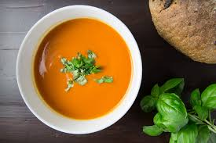

Gazpacho

Description
This is a famous Andalusian cold soup perfect for a hot summer day.
Ingredients
- Tomatoes
- Green peppers
- Cucumber
- Onion
- Garlic
- Bread slice
- Olive oil
- Salt
Steps
- Wash vegetables
- Throw vegetables into a blender
- Blend
- Add bread and salt
- Blend again
- Add olive oil
- You guessed it: blend again
- Transfer to a bowl
- Transfer to the fridge
- Wait for about an hour
- Ready!